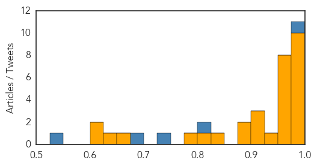
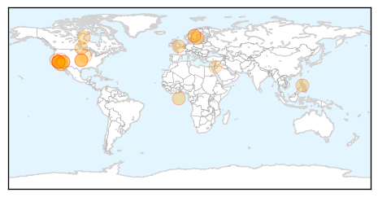

Ebola
30-Day Web Trend
0 alerts, 0 warnings

30-Day Twitter Trend
15 alerts, 5 warnings

Article Locations

Article Confidences
Top Articles:
- 0.999
- Ebola ebbs but aid agencies warn against complacency
- 0.999
- Human trials begin of US-made Ebola drug ZMapp
- 0.999
- Ebola outbreak: Disease ebbs in West Africa but aid agencies warn against complacency
- 0.998
- Ebola outbreak: Sierra Leone vice-president quarantined
- 0.996
- Ebola Victim Returns to Liberia, Aids Research - WRCBtv.com
- 0.995
- Decision on Ebola mass vaccination in August at earliest
- 0.991
- Thoughts turn to recovery as Ebola ebbs
- 0.990
- Shropshire Ebola doctor delighted with Sierra Leone progress « Shropshire Star
- 0.986
- Haunting memories of nurse's Ebola stint
- 0.983
- presidential commission
- 0.974
- US to begin clinical trial of Ebola experimental drug ZMapp in Liberia
- 0.973
- Obama, Liberian President Sirleaf discuss Ebola recovery
- 0.973
- Early Warning for Ebola: Strengthening Africa's Capacity to Anticipate Risk of Outbreaks
- 0.973
- Sierra Leone divided on reinstated Ebola measures
- 0.972
- West Aussies join ‘Florence Nightingale’ of Ebola crisis
- 0.970
- U.S. Ebola survivor Dr. Craig Spencer gives his side of the stor - WLTZ 38
- 0.964
- US and Liberia begin clinical trial of Ebola experimental drug ZMapp
- 0.964
- US and Liberia begin clinical trial of Ebola experimental drug ZMapp
- 0.932
- US military ends Ebola mission in Liberia — Nation — Bangor Daily News — BDN Maine
- 0.910
- Gulf Daily News Local News Newlyweds' travel ban agony
- 0.908
- Obama, Liberian President discuss Ebola recovery
- 0.901
- Newlyweds face ebola travel ban agony
- 0.888
- US Military Closes Ebola Mission in Liberia as the Epidemic Nears End
- 0.888
- UPDATED: Ebola Response in Clarendon
- 0.847
- Liberia leader hails Obama's 'extraordinary' Ebola efforts. Politics. Tengrinews.kz
- 0.824
- Panasonic Donates Solar Lanterns to UNDP for Ebola Relief Efforts
- 0.778
- Human Antibodies can Neutralize the Marburg Virus, a Close Cousin to Ebola Virus
- 0.653
- Spotlight on Ebola, post-2015 development agenda at ACP health ministers meeting
- 0.633
- African church-based health experts want more recognition from governments
- 0.609
- Agriculture Expansion In Tanzania May Increase Plague Risk
- 0.604
- Liberia Says “Thank You” by Nancy LeTourneau
Top Tweets:
- 0.985
- RT: AfricaAgainstEbola Grâce à votre geste, nous repousserons le virus Ebola hors de l’Afrique. Pour contribuer les... http://t.…
- 0.975
- Regional Spread of Ebola Virus, West Africa, 2014 http://t.co/mKSAASUFn2
- 0.883
- Mapping the Ebola outbreak Africaagainstebola http://t.co/bDi5hGaz3n @EbolaAlert @Utmanaebola
- 0.829
- Children's Hospital of Philadelphia Hosts Ebola Education Workshop - CBS Local http://t.co/Bw8iWK806j ebola EVD
- 0.770
- Sierra Leone VP Samuel Sam-Sumana Places Himself in Ebola Quarantine - http://t.co/FMQyohd10H http://t.co/8zTiuu4rSq ebola EVD
- 0.763
- Ebola endemic in west Africa remains a risk http://t.co/EmdnKh4RR8
- 0.752
- It Kills Germs For Up To 6 Hours. Can It Wipe Out Ebola? - NPR (blog) http://t.co/kQZjzaNeR5 ebola EVD
- 0.752
- It Kills Germs For Up To 6 Hours. Can It Wipe Out Ebola? - NPR (blog) http://t.co/HVB4HGnu5o ebola EVD
- 0.745
- For Africa to overcome the Ebola epidemic, we as Africans and friends of Africa need to fight this disease together.AfricaAgainstEbola
- 0.711
- Afrique de l'Ouest. Insécurité alimentaire localisée Janvier à juin 2015 ebola http://t.co/Q1bHXs6e7u
- 0.652
- RT: Ebola: Sierra Leone village in lockdown after 31 new cases recorded http://t.co/2eyvypB1kI
- 0.575
- SierraLeone Leone registers rise in new Ebola cases | http://t.co/YfAzLRNrE3
- 0.574
- RT: Nearly Beaten in Sierra Leone, Ebola Makes a Comeback by Sea http://t.co/OCk7LC0nNT
- 0.556
- Ebola Victim Returns to Liberia, Aids Research - http://t.co/FMQyohd10H http://t.co/S8bKJI8GsM ebola EVD
Measles
30-Day Web Trend
7 alerts, 6 warnings

30-Day Twitter Trend
0 alerts, 0 warnings

Article Locations
Article Confidences

Top Articles:
- 0.987
- Measles Outbreak on Las Vegas Strip
- 0.976
- Doctors Express directors weigh in on measles vaccine
- 0.976
- Three new measles cases linked to Emeril’s staffer
- 0.975
- More measles cases in Lanaudière region of Quebec
- 0.975
- Sweden confirms measles case
- 0.975
- Sweden confirms measles case
- 0.967
- 4 measles cases linked to Las Vegas restaurant, health officials say
- 0.964
- Georgia measles scare over with no spread of the disease
- 0.958
- Top-Line Questions From Moms About MMR
- 0.938
- Measles victim dines at Berkeley's La Mediterranee; may have exposed others. Category
- 0.904
- 156 cases, possible exposure in Berkeley restaurant
- 0.899
- Toddler didn't have measles
- 0.882
- Haverhill schools guard against measles
- 0.877
- Philippines measles outbreak 2014: 58,010 cases, 110 deaths
- 0.869
- MMR vaccination, doing nothing is the more dangerous choice ~ Lake Superior News
- 0.858
- New Measles Cases Penetrate Vegas' MGM Grand Hotel
- 0.841
- Dana Hills High School
- 0.765
- Measles outbreak: 156 cases, possible exposure in Berkeley restaurant
- 0.729
- Measles outbreak spreads to Sweden - Radio Sweden
- 0.711
- Ask the doc
- 0.688
- 6 Students Kept From Riverside County School After Measles Scare « CBS Los Angeles
- 0.680
- Most question why children wouldn’t be vaccinated - TheAlpenaNews.com
- 0.576
- Bam Jam: Measles Hits Emeril's Nevada Outpost
Top Tweets:
-
No tweets found for Feb 28, 2015